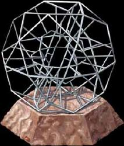

|
|
Kal-toh |
|
||||
|  |
È una sorta di rompicapo vulcaniano formato da una serie di bastoncini
cristallini chiamati t'an. Mettere un t'an su due lati opposti del
kal-toh significa voler stabilire un equilibrio spaziale ed è una strategia
totalmente fallimentare, perché lo scopo del kal-toh non è la ricerca
dell'equilibrio, ma riuscire a trovare la via dell'ordine, anche quando si ha di
fronte il caos totale.
Secondo Tuvok il kal-toh sta agli
scacchi esattamente come gli scacchi stanno al biliardo.